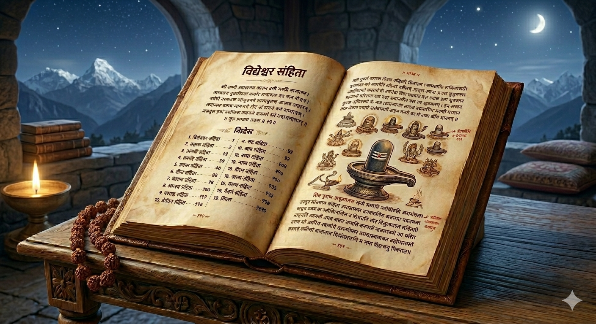

A Sacred Digital Compendium of the Shri Shiv Maha Puran | श्री शिव महापुराण: एक संपूर्ण डिजिटल संकलन

शिव पुराण सनातन धर्म के सबसे महत्वपूर्ण और प्राचीन अठारह पुराणों में से एक है, जो साक्षात भगवान शिव की महिमा का बखान करता है। यह ग्रंथ केवल कथाओं का संग्रह नहीं है, बल्कि जीवन जीने की एक सम्पूर्ण कला और मोक्ष प्राप्ति का सुगम मार्ग है। इसके श्रवण मात्र से मनुष्य के जन्म-जन्मांतर के संचित पापों का नाश होता है और हृदय में भक्ति का उदय होता है। इसमें भगवान शिव के निर्गुण निराकार स्वरूप से लेकर सगुण साकार स्वरूप तक की यात्रा का वैज्ञानिक और आध्यात्मिक वर्णन मिलता है। सृष्टि की उत्पत्ति, पालन और संहार के रहस्यों को इस पुराण में अत्यंत विस्तारपूर्वक समझाया गया है। यह ग्रंथ गृहस्थों के लिए धर्म का पालन करने और संन्यासियों के लिए आत्मज्ञान प्राप्त करने की प्रेरणा देता है। इसमें वर्णित पंचाक्षर मंत्र (ॐ नमः शिवाय) और महामृत्युंजय मंत्र की महिमा साधक को अकाल मृत्यु के भय से मुक्त करती है। शिव पुराण का नियमित पाठ करने से मन की चंचलता समाप्त होती है और साधक को मानसिक शांति एवं संतोष की प्राप्ति होती है। यह दिव्य ग्रंथ हमें सिखाता है कि अहंकार का त्याग और समस्त प्राणियों के प्रति करुणा ही शिवत्व प्राप्त करने का वास्तविक पथ है। कलियुग में शिव पुराण की अमृतवाणी मानव जाति के कल्याण और विश्व शांति के लिए एक अमूल्य उपहार है।
The Shiv Purana is a magnificent spiritual encyclopedia that unveils the profound mysteries of the universe through the lens of Shaivism. It stands as an eternal beacon of wisdom, guiding humanity from the darkness of ignorance toward the luminous light of Self-realization. Comprising 24,000 verses, it meticulously details the divine exploits and cosmic functions of Lord Shiva, the primordial source of all existence. The scripture explains that Shiva is both the 'Nirguna' Brahman (formless reality) and the 'Saguna' Ishvara (the manifest deity) who loves his devotees. It provides a scientific understanding of creation (Srishti), explaining how the cosmos emerged from the union of Shiva and Shakti. Through its sacred stories, it emphasizes the importance of 'Dharma' (righteousness), 'Satya' (truth), and 'Ahinsa' (non-violence) in daily life. The text highlights the unparalleled power of the holy syllable 'Om' and the 'Panchakshara Mantra' as tools for achieving mental liberation. By studying the Shiv Purana, a seeker learns to transcend the ego and recognize the divine presence in every atom of the physical world. It offers practical spiritual remedies for overcoming the struggles of the modern age, such as stress, anxiety, and moral degradation. Ultimately, this sacred archive is a roadmap for the soul to merge back into the ocean of infinite bliss and eternal consciousness.
This Samhita establishes the fundamental principles of Shaivite worship. It details the glory of the Shiva Linga as the symbol of the cosmic pillar of fire. It provides deep insights into the meaning of the Panchakshara Mantra and the spiritual potency of Rudraksha beads.
View Detailed SummaryThe biographical core of the Purana, chronicling the descent of the Divine into the material realm across five specialized sections:
The Shatarudra Samhita is a profound dialogue between Nandishwar and Sanatkumara and discusses about infinite incarnations and avatars of Lord Shiva.
View Detailed SummaryThe Kotirudra Samhita states that the number of Shivlings in the universe is beyond count. It highlights the twelve Jyotirlingas in detail, along with several subsidiary shrines (uplings).
View Detailed SummaryMother Uma explains the laws of Karma and the cycle of rebirth. It provides descriptions of celestial heavens and various hells based on earthly deeds, emphasizing the creative energy (Shakti) of the universe.
View Detailed SummaryAn esoteric guide for advanced seekers on Sannyasa and the vibration of Pranava (Om). It provides instructions on internal yoga and merging with the absolute reality of Shiva.
View Detailed SummaryThere are infinite incarnations and avatars of Lord Shiva. Detailing few of them in this section.
Learn MoreDiscover the history, origin, and divine stories of the 12 sacred Jyotirlingas from Shiv Purana.
Learn MoreExplore cosmic battles, Samudra Manthan, and the origin of River Ganga.
Read StoriesLearn Mahamrityunjaya Mantra and Shiva Tandava Stotram with meanings.
ExploreGuides for Somvar Vrat, Maha Shivratri, and sacred Purana facts.
Explore Detail